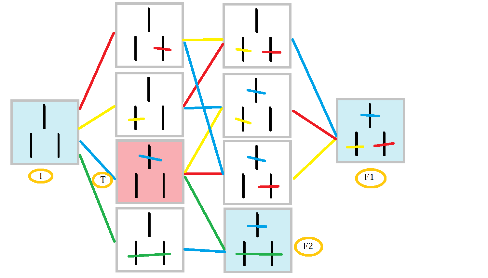
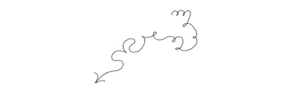

The (modified) NIM game

«The game here discussed has interested the writer on account of its seeming complexity, and its extremely simple and complete mathematical theory. The writer has not been able to discover much concerning its history, although certain forms of it seem to be played at a number of American colleges, and at some of the American fairs. It has been called Fali-Tan, but as it is not the Chinese game of that name, the name in the title is proposed.»
Thus wrote the mathematician Charles L. Bouton in Nim, A Game with a Complete Mathematical Theory (Annals of Mathematics, Vol. 3, No. 1/4 (1901 – 1902), pp. 35-39). Which does not help in understanding what NIM stands for at all. maybe New Interactive Media? Or Network Interface Module? Probably we will never know…
NIM is a time-killer strategy game that many of us played on our school desktops. How it works is best explained in this unsetting sequence from Last year in Marienbad by Alain Resnais:
The winning strategy to play the NIM game has been clearly explained in this video:
Notice that in the original NIM game only odd number of elements are present in each file, and that one can remove any set of remaining elements in that file.

The version of the game we are going to discuss differs in some important respects from NIM. The elements are bars written on a sheet of paper or blackboard (or your prison cell’s wall, for that matters).
The bars are crossed and not removed, and it is not permitted to cross one line twice. This means that this is not allowed:
\[\cancel{\,|\,\cancel{|\,|\,}|\,|\,}\]
but this is
\[\cancel{\,|\,}\cancel{|\,|\,}|\,|\,\]
It is the one who crosses the last bar who wins.
We allow for files of both even and odd numbers of bars.
It turns out that this is a significantly different game from the original NIM, that we call mNIM for obvious reasons. In fact we don’t have an idea yet of how a winning strategy could work (if there exists one).
In one of our laboratories at Festivaletteratura, we used this simple game to construct a mechanical machine that performs a Machine Learning algorithm that learns to play this game at the second level (not much, we admit…). Something similar to MENACE, which learnt to play Tic-Tac-Toe. Each configuration of the game corresponds to a box, each move to the color of several beads contained in the boxes and, as the game is played over and over, the learning algorithm consists in adding or removing beads of certain colors from the boxes so that winning strategies are reinforced and losing strategies are penalized.
Some questions are: if we were to build a similar machine to learn to play a more advanced level of the game, how many boxes would we need? And how many colors and beads? And how many games should we play for the machine to learn effectively?
Let’s start with the first question. Let \(b(n)\) be number of boxes (configurations) if we only had one file of length \(n\), and \(B(n)\) be the number of boxes we will need to build the whole thing (configurations of the whole game).
The configurations of one bar are obviously two:
\[\,|\,\quad \mathrm{or}\quad \,\cancel{\,|\,}\,\]
Therefore \(b(1) = 2\).
The configurations of two bars are also easy to enumarate:
\[\,|\,|\,\quad \mathrm{or}\quad \cancel{\,|\,} \,|\, \quad \mathrm{or}\quad \,|\,\cancel{\,|\,} \quad \mathrm{or}\quad \cancel{\,|\,}\,\cancel{\,|\,} \quad \mathrm{or}\quad \cancel{\,|\,|\,}\]
Therefore \(b(2)= 5\).
Because we need five boxes to represent the configurations of the second row per each configuration of the first row, the overall number of boxes needed to construct the machine is
\[B(2) = b(1) \times b(2) = 2 \times 5 = 10\]
How many configurations and boxes are needed for the 3rd level of the mNIM game?
I’m sure you just brilliantly solved this problem, so let’s move on. How many boxes do we need to construct if we want to play mNIM in the 5th level?
\[\, \, \, | \,\, \,\]
\[\,|\,|\,\]
\[\,|\,|\,|\,\]
\[\,|\,|\,|\,|\,\]
\[\,|\,|\,|\,|\,|\,\]
Of course, it should be clear that
\[B(5) = \prod_{k=0}^5 b(k) = B(3) \times b(4) \times b(5)\]
You know \(B(3)\) from the previous exercise, but what about \(b(4)\) and \(b(5)\)? You will soon realize that finding a direct answer by counting all of the configurations is a bit crazy. We need some clever trick to compute all possible single-file combinations in a general way, making sure that we do not leave anything behind…
Is there a guiding principle? Well, we could just inspect the easier cases \(n=2\) and \(n=3\) that we have under our noses. One general idea is that, if we want to go to \(n=5\), we could just look at regularities in moving from \(n=2,3,4,...\). This kind of principle is called proof by induction.
For \(n=2\), notice that we can group all cases into three subcases: the two where the last is not crossed
\[\,|\,|\,\quad \mathrm{or}\quad \cancel{\,|\,} \,|\,\]
the ones were it is crossed on its own
\[\,|\, , \cancel{\,|\,} \quad \mathrm{or}\quad \cancel{\,|\,}\,\cancel{\,|\,}\]
and the one where it is crossed together with its neighbour:
\[\cancel{\,|\,|\,}\]
Can you do a similar separation for the case of \(n=3\) bars that you worked out before? What does it look like? Is there any hint of a similarity with the previous case?
What about \(n\) bars? Suppose we know the number of configurations of fewer bars \(b(1),b(2),\ldots b(n-1)\), and that we add one more bar:
\[\stackrel{n-1}{\overbrace{|\,\ldots\,|\,}}\, ,\, \,|\,\]
We want to express the number of configurations \(b(n)\) in terms of the number of configurations of fewer bars.
Definitely, when the last bar is not crossed each configuration of the previous \(n\) bars contributes. Therefore we have at least
\[b(n) = b(n-1) + \ldots\]
Same is true when the last bar is checked on its own:
\[\stackrel{n-1}{\overbrace{|\,\ldots\,|\,}}\,,\,\cancel{\,|\,}\]
Therefore we have at least:
\[b(n) = b(n-1) + b(n-1) + \ldots = b(n-1) + \ldots\]
But it can also be the case that the last bar is checked together with its nearest neighbour:
\[\stackrel{n-2}{\overbrace{|\,\ldots\,|\,}}\,,\,\cancel{\,|\,|\,}\]
In this case, we have as many configurations as there are configurations of the previous \(n-1\) bars. Therefore we have at least:
\[b(n) = b(n-1) + b(n-1) + b(n-2) + \ldots\]
But the last line could also be crossed together with its second nearest neighbour, or its third nearest neighbour, or its \(k\)-th nearest neighbour up to \(k = n-1\):
\[\stackrel{n-k-1}{\overbrace{|\,\ldots\,|\,}}\,,\,\stackrel{k+1}{\overbrace{\cancel{\,|\,|\, \ldots \,|\,}}}\]
You can probably see where this is heading to. We can condense the final formula as follows:
\[b(n) = b(n-1) + \sum_{k=0}^{n-1} b(k)\]
So, if we know all of the previous \(b(k)\) up to \(k = n-1\), we can obtain the \(n\)-th. Yet another way to write it is
\[b(n) = 3 b(n-1) - b(n-2)\]
which will be familiar to most mathematicians.
Prove this formula!
Let’s test our formula against the configurations we already know! First we try out \(b(1)\). Our formula says that
\[b(1) = 2b(0)\]
But wait! How many configurations are there of the mNIM game with zero bars? This is a very weird question! What does it even mean to play the mNIM game if we have no bars at all?
However, somehow, with a little stretch of imagination mathematics allows to give an answer to this question that is compatible with the problem we need to solve, even if we don’t have an intuition of whatever it means to play the mNIM game with zero bars! Since we already know that \(b(1) = 2\), it must be that
\[b(0) = 1\]
Let’s now check our formula further on. We have that
\[b(2) = 2b(1) + b(0) = 2 \times 2 + 1 = 5\]
\[b(3) = 2b(2) + b(1) + b(0) = 2 \times 5 + 2 + 1 = 13\]
It works!
So finally we are in place to predict how many boxes we need to fill to instruct our machine-learning machine to play the 5-th level of the mNIM game. Let us remember that
\[B(5) = b(1)\times b(2) \times b(3) \times b(4) \times b(5)\]
The only ingredient we missed were \(b(4)\) and \(b(5)\), but now we have them! Thanks to our formula we obtain
\[b(4) = 2 \times 13 + 5 + 2 + 1= 34\]
\[b(5) = 2 \times 34 + 13 + 5 + 2 + 1 = 89\]
and finally
\[B(5) = 393 380\]
Quite a big number already! But how large is this number growing? That’s the question we want to answer next.
Let us take a closer look at the sequence \(b(0), b(1),b(2),b(3),\ldots\) that we obtained:
\[1, 2, 5, 13, 34, 89, \ldots\]
Does it remind you of something? Well, let us fill in some other numbers (ours are in bold):
\[\boldsymbol{1},1, \boldsymbol{2}, 3, \boldsymbol{5}, 8, \boldsymbol{13}, 21, \boldsymbol{34}, 55, \boldsymbol{89}, 144 \ldots\]
Does this sequence ring a bell? If it doesn’t, you may just plug in the first few numbers in the Online Encyclopedia of Integer Sequences.
Well, it looks like \(b(n) = F(2n)\) are the odd terms in the Fibonacci sequence! But are we sure of this? What if after a while the pattern changes? Let us prove this fact. The Fibonacci sequence is defined by
\[F(n) = F(n-2) + F(n-1)\]
We want to express this just in terms of \(F(n-2), F(n-4)\) etc.:
\[F(n) = F(n-2) + F(n-2) + F(n-3)\]
\[= 2F(n-2) + F(n-4) + F(n-5)\]
\[= 2F(n-2) + F(n-4) + F(n-6) + F(n-7)\]
and so on until you hit the bottom. After a little thought you will realize that we obtain precisely the generating sequence for \(b(n)\) that we said above would be familiar to most mathematicians. Now it’s familiar to you as well!
Now we can estimate how fast \(B(n)\) grows. In fact we know that for large \(n\)
\[C(n) = \frac{\varphi^{2n} - (\varphi-1)^{2n} }{\sqrt{5}}\]
where \(\varphi = (1+\sqrt{5})/2\) is the golden ratio. But then because \(\varphi-1\) is smaller than one for large \(n\), then \(b(n)\) grows like
\[b(n) \sim \varphi^{2n}\]
This is all the more interesting if considering that the Fibonacci sequence is obviously related to the numbering of Scienceground episodes, the first being 1, the second 2, the third 1.5 and, as already announced, the fourth will be 1.6666666…..
As regards \(B(n)\), we have that
\[B(n) = \prod_k^n b(k) = \exp \sum_{k}^n \log b(n) = \varphi^{n(n+1)}\]
So basically the number of boxes grows with the golden section elevated to the square of the number of the level. So for example, if each person in the world has, let’s say, 10 boxes, and we could collect all of them (which makes 75 billion boxes), to which level could we program our machine?
Answer: just 6! And it does not change if one everyone had 100 boxes!
What about the original NIM game? How many boxes should we build for it?